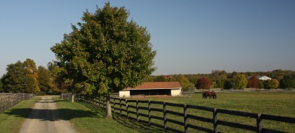
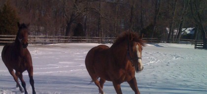
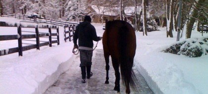
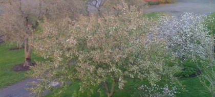
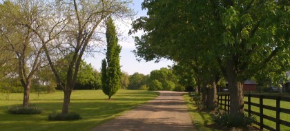
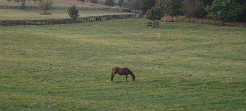

What We Offer
Full-Service Care
For fifty years, Bright View Farm has provided the kind of attentive, professional care that owners and breeders trust with their most valuable horses. From foaling season through sales preparation, our experienced staff is dedicated to the health, development, and performance of every horse in our care.
We are 45 minutes from Philadelphia and Monmouth Racetrack, and 1.5 hours from New York City — conveniently located for Mid-Atlantic owners and trainers.
We offer full boarding for mares, weanlings, and yearlings on a year-round or seasonal basis. Our 270 acres of carefully maintained pastureland — tested annually for optimal nutritional content — give young horses the turnout and space essential for healthy development. Two barns and five large run-in sheds provide safe, comfortable shelter in all weather.
Bright View Farm is a trusted destination for post-operative lay-up and rehabilitation. Our tranquil setting, experienced staff, and close veterinary relationships make us well-suited to manage horses recovering from surgery or injury. We work closely with your veterinarian to follow prescribed protocols and support a safe, thorough recovery.
We prepare yearlings for the major Thoroughbred auctions, with a track record of presenting horses that attract competitive bids. Our sales prep program focuses on condition, manners, and presentation — ensuring each horse walks into the ring looking and moving its best. Our TOBA awards and Eclipse-caliber breeding results speak to the quality of horses that leave this farm.
We maintain close, long-standing relationships with experienced equine veterinarians in the region. Bright View Farm coordinates routine and emergency veterinary care on behalf of our clients, including scheduled wellness exams, reproductive management, and specialist consultations. Owners can rest assured that their horses receive prompt, expert attention whenever needed.
The Facilities
Every aspect of Bright View Farm is designed around the health and well-being of the Thoroughbred — from the acreage to the barn layout to the daily routines of our staff.
Around the Farm






Let's Talk About Your Horses
Whether you're looking for full-season boarding, a lay-up stall, or sales preparation for your yearling, we'd love to discuss how Bright View Farm can serve your needs.